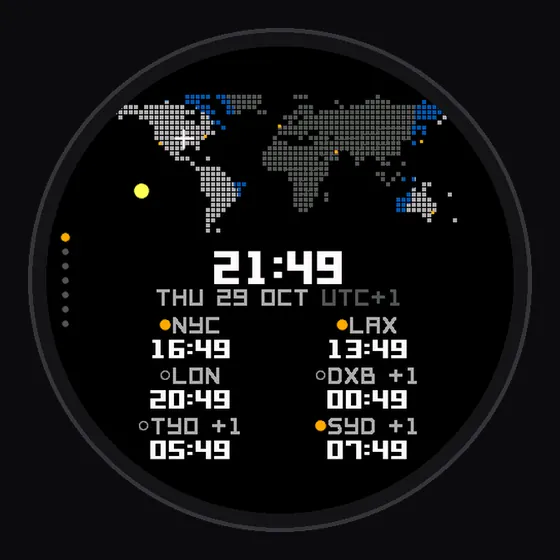
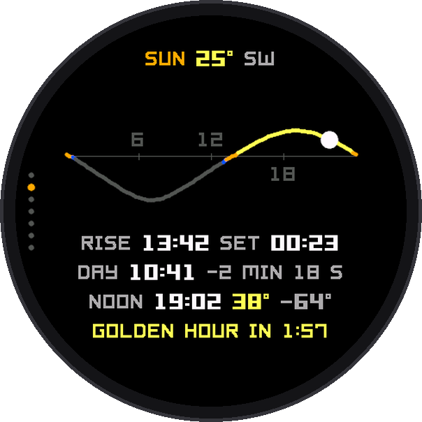
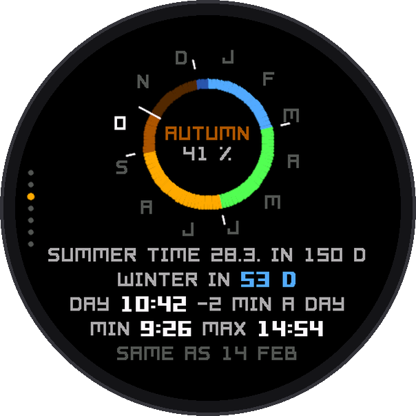
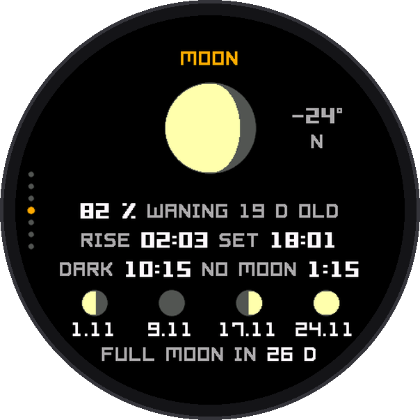

Watch app
Pharos Time
An almanac on your wrist. Where it is day right now, when the light is best, what the moon does tonight. Calculated on the watch to the minute, and it works offline.
Get it on Connect IQ



Seven screens
- World: a dot map with the live day, twilight and night, and the time in 6 cities you choose
- Sun: today's path, golden and blue hour, sunrise, sunset and the daylight gained since yesterday
- Seasons: the year as a ring, days to the next season, the next clock change
- Moon: phase, height and direction, rise and set, the next four phases with supermoons, and tonight's dark hours for stargazing
- Year and Today: week number, a square per week, your own countdown, name days and holidays
- Tides (optional): the next high and low water and a 24-hour curve at the nearest coast
Good to know
- Works offline, except tides; no battery use when closed
Elegant, rich in data and light on the battery. Designed for round screens, made for 70 Garmin watches. Free for now.